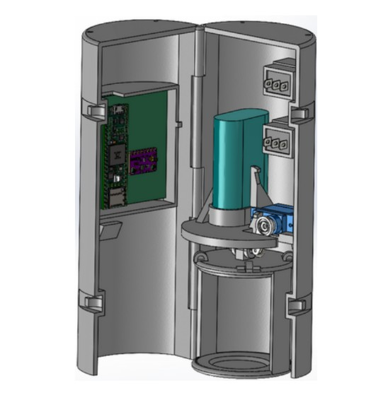
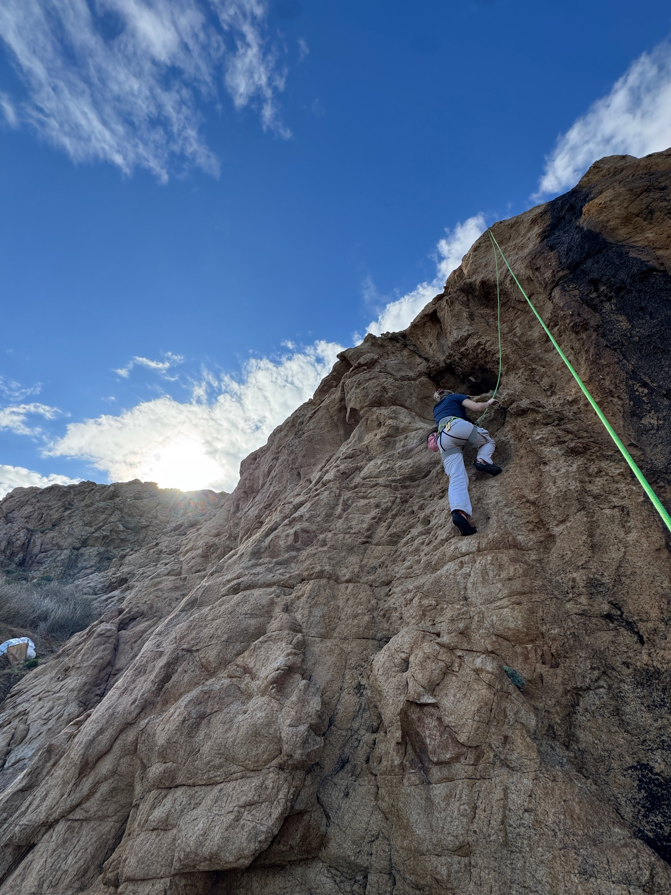
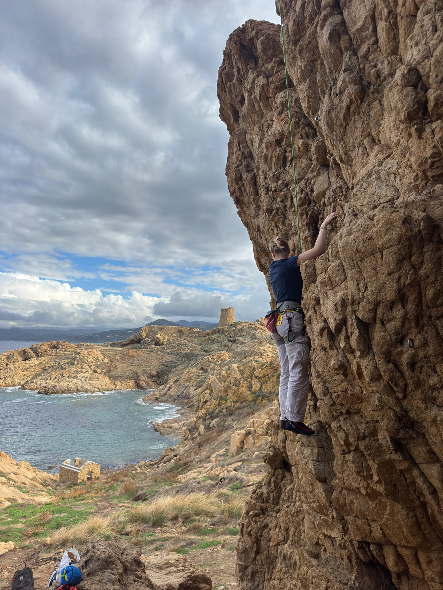

What I’m looking for
An internship / entry-level opportunity in materials, industrial engineering, or sustainability, where I can combine field execution, structured problem-solving, and impact-driven design choices.

Engineering student in Materials & Sustainable Development (ICAM). I enjoy building reliable, low-impact solutions—from materials selection and eco-design to hands-on prototyping and on-site project coordination.
An internship / entry-level opportunity in materials, industrial engineering, or sustainability, where I can combine field execution, structured problem-solving, and impact-driven design choices.
Feel free to reach out for internships, collaborations, or just to say hi.
English version (PDF).
French version (optional).
General cover letter (PDF). I can tailor it to specific roles.
I believe sustainable engineering must be measurable, useful, and implementable. Real impact comes from solutions that work on the ground: the right materials, the right processes, and the right habits to deliver quality over time.
My goal is to help teams build products and projects that last—while reducing waste, rework, and unnecessary environmental impact.
I supported day-to-day on-site execution by coordinating crews and subcontractors, tracking progress versus schedule, and helping maintain safety and quality standards. I also assisted with materials logistics (orders, deliveries, storage) and reporting.
In a production environment, I applied strict work standards, respected quality requirements, and contributed to stable output. This role trained my attention to detail and consistency.
I developed a CanSat payload with a remote-controlled parachute focusing on stable descent, reliable telemetry, and rugged design. The project combined lightweight design choices, control logic, and data analysis.

Climbing helps me build discipline, focus, and calm decision-making under pressure. It also reminds me that progress comes from consistency, small improvements, and good teamwork.
Two moments captured while climbing.


I volunteer with ERA, an association that rescues and helps rehome stray cats in Strasbourg. The work involves coordination, reliability, and practical problem-solving—often under time constraints.
I value community-driven initiatives where action and responsibility make a real difference. It’s also a great way to practice teamwork, organization, and consistency outside of school and work.